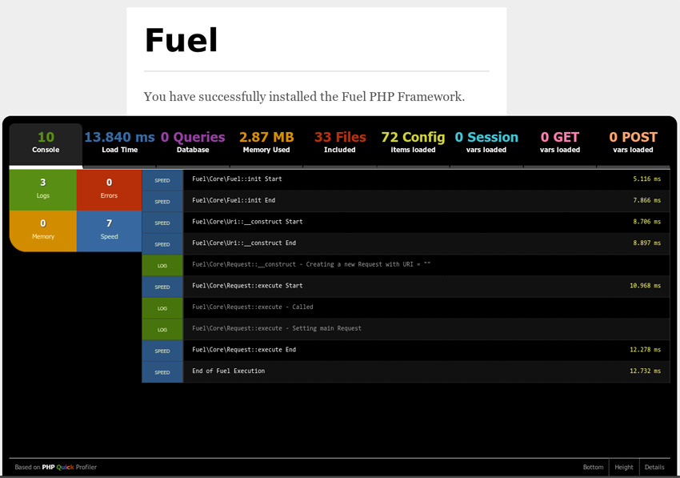

Profiling
The application profiler bundled with FuelPHP is based on PHP Quick Profiler.
What is profiling?
The profiler provides profiling and debugging related information without having to add a lot of programmatic overhead to the code. You only need to toggle one config setting to true and you have access to an automated tool to help create a faster and more consistent review experience. Since anyone can use it, the profiler also gives you an idea of where the code stands before the review.
The profiler provides you with a tabbed interface, in which you can find the following information:
- Console. This is the default tab, and gives you information about errors, log entries, memory usage or execution timings.
- Load time. This is the request load time. It will display execution details in the body of the tab.
- Database. The number of queries executed, the execution time, and if supported, a query analysis.
- Memory. Total peak memory used by the request.
- Files. The fully qualified name of all PHP files included, and their size.
- Config. The contents of the configuration store at the end of the request.
- Session. The contents of the session store at the end of the request.
- GET. The contents of the $_GET array.
- POST. The contents of the $_POST array.
A typical profiler screen looks like this:
At the bottom of the profiler screen, you will find three options:
- Bottom. By default, the profiler is an overlay. Click on this option if you want to see all output, the profiler will move past the end of your output. Click again and it will move back.
- Height. Toggle between a large (like in the screenshot) or small profiler panel.
- Details. Toggle the profiler details. If switched off, only the tab bar will be visible.
Application profiling
Profiling your application is disabled by default. You can configure Fuel to activate the profiler via your applications config/config.php file.
'profiling' => true,
After the profiler has been enabled, you will see it pop up at the bottom of your browser window.
Database profiling
Database profiling is disabled by default too. Database profiling is activated per defined database, and is activated by setting the 'profiling' option of the database configuration you want to profile in your config/<environment>/db.php to true.
'profiling' => true,
If you use multiple environments, make sure to select the correct db.php configuration file.
Add information to the profiler
See the documentation of the Profiler class to see how you can interact with the profiler.